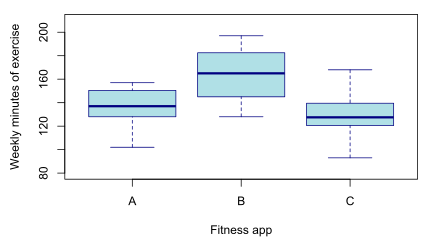

Questions
Download the question paper (PDF)
Try each question on paper first.
Question 1. Coffee truck profit at City Hall: a one-sample t.test
The 2025 Assignment 3 data set CoffeeTruck.csv holds the daily sales of a coffee truck in an online game. Profit is the profit for the day (rand) and Location is where the truck stood. Jo believes that the truck must earn an average profit of at least R350 per day to be sustainable. Is the mean daily profit at City Hall greater than R350? (Based on 2025 Assignment 3, Question 5.)
coffee <- read.csv("CoffeeTruck.csv")
cityhall <- coffee$Profit[coffee$Location == "CityHall"]
length(cityhall)
mean(cityhall)
sd(cityhall)
t.test(cityhall, mu = 350, alternative = "greater")R output
[1] 183
[1] 562.7814
[1] 372.2595
One Sample t-test
data: cityhall
t = 7.7324, df = 182, p-value = 3.471e-13
alternative hypothesis: true mean is greater than 350
95 percent confidence interval:
517.2864 Inf
sample estimates:
mean of x
562.7814 (a) Define $\mu$, write the hypotheses, and name the parts of the code that set the null value and the direction. (b) Confirm t and df by hand. (c) Write the p-value as a decimal; decision and conclusion at 5%.
(a) Parameter and hypotheses
$\mu$ is the true mean daily profit (in rand) of the coffee truck on all days at the City Hall location. The 183 City Hall days in the data are the sample; their mean, R562.78, is the statistic $\bar x$.
$$H_0\colon \mu = 350 \qquad H_A\colon \mu \gt 350$$mu = 350 sets the null value $\mu_0 = 350$. alternative = "greater" sets the direction of $H_A$ (greater than). The output line "true mean is greater than 350" repeats $H_A$.
(b) The test statistic and df by hand
From the first three output lines: $n = 183$, $\bar x = 562.7814$ and $s = 372.2595$.
$$SE = \frac{s}{\sqrt n} = \frac{372.2595}{\sqrt{183}} = \frac{372.2595}{13.5277} = 27.5182$$ $$t = \frac{\bar x - \mu_0}{SE} = \frac{562.7814 - 350}{27.5182} = \frac{212.7814}{27.5182} = 7.7324$$ $$df = n - 1 = 183 - 1 = 182$$These match t = 7.7324, df = 182 in the output.
(c) p-value, decision and conclusion
3.471e-13 means $3.471 \times 10^{-13} = 0.0000000000003471$: practically 0. The sample mean lies about 7.7 standard errors above 350, which is far out in the right tail.
$0.0000000000003471 \lt 0.05$: Reject $H_0$. There is sufficient evidence that the mean daily profit at the City Hall location is greater than R350.
The one-sided interval agrees: with 95% confidence the true mean daily profit at City Hall is at least R517.29, and 350 is below that bound.
Question 2. Which method fits the design?
For each study, choose two independent means, paired means or a one-way ANOVA, with a reason. (a) Resting heart rate of 15 athletes before and after a training camp. (b) 40 randomly chosen first-years and 35 randomly chosen final-years report weekly study hours. (c) Plants randomly assigned to four light levels; growth recorded. (d) Each of 12 students rates two different textbooks. (e) Twenty drivers each test two tyre brands, one week on each; fuel use recorded. (f) Lung capacity of 30 smokers and 30 non-smokers. (g) For (a), with $d = \text{Before} - \text{After}$: define $\mu_{diff}$ and write the hypotheses for the claim that the camp lowers the mean resting heart rate.
(a) to (f)
- (a) Paired means. The same athlete gives a before value and an after value, so the two values of one athlete form a pair.
- (b) Two independent means. Two separate random samples; no student is in both groups, and no first-year is matched with a final-year.
- (c) One-way ANOVA. One numerical response (growth) is compared across four groups (light levels). Two-sample methods compare only two groups.
- (d) Paired means. Each student gives both ratings.
- (e) Paired means. Each driver gives a fuel-use value for both brands.
- (f) Two independent means. The smokers and the non-smokers are different people, with no link between a particular smoker and a particular non-smoker. The two groups have the same size, but equal sizes do not make data paired.
(g) Parameter and hypotheses for study (a)
$\mu_{diff}$ is the true mean of Before minus After resting heart rate for all athletes like these (the mean drop in resting heart rate over the camp).
"Lowers" means After is smaller than Before, so $\text{Before} - \text{After}$ is positive:
$$H_0\colon \mu_{diff} = 0 \qquad H_A\colon \mu_{diff} \gt 0$$Question 3. Tired drivers: a paired t test and a randomisation test
Six drivers each did a reaction test rested and tired; $d = \text{tired} - \text{rested}$ (seconds). Claim: being tired increases the mean reaction time.
d <- c(0.04, 0.11, -0.02, 0.07, 0.09, 0.05)
sd(d)
signs <- as.matrix(expand.grid(rep(list(c(1, -1)), 6)))
randomised_means <- as.vector(signs %*% d) / 6
length(randomised_means)
sum(randomised_means >= mean(d))
mean(randomised_means >= mean(d))
pt(3.053, df = 5, lower.tail = FALSE)
pt(3.053, df = 5)R output
[1] 0.04546061
[1] 64
[1] 2
[1] 0.03125
[1] 0.0141636
[1] 0.9858364(a) Why paired. (b) Define $\mu_{diff}$; hypotheses. (c) $\bar x_{diff}$, SE, $t$ and df by hand. (d) Which pt line is the p-value. (e) Why 64 randomised means; meaning of 2 and 0.03125 (a $-1$ in a row of signs swaps that driver's tired and rested values). (f) Decisions and conclusions of both tests; do they agree? (g) Condition for the $t$ test with six pairs.
(a) Why the data are paired
Each driver is measured twice, rested and tired. The two times of one driver belong together, so the analysis uses the six differences $d$, one per driver.
(b) Parameter and hypotheses
$\mu_{diff}$ is the true mean of (tired minus rested) reaction time for all drivers like these. "Increases" means tired is larger, so $d$ is positive:
$$H_0\colon \mu_{diff} = 0 \qquad H_A\colon \mu_{diff} \gt 0$$(c) Mean, standard error and test statistic
$$\bar x_{diff} = \frac{0.04 + 0.11 - 0.02 + 0.07 + 0.09 + 0.05}{6} = \frac{0.34}{6} = 0.0567$$ $$SE = \frac{s_{diff}}{\sqrt{n_{diff}}} = \frac{0.04546061}{\sqrt 6} = \frac{0.04546061}{2.4495} = 0.0186$$ $$t = \frac{\bar x_{diff} - 0}{SE} = \frac{0.056667}{0.018559} = 3.0533 \qquad df = 6 - 1 = 5$$The code rounds this to 3.053.
(d) The p-value line
$H_A$ says "greater than", so the p-value is the area to the right of $t = 3.053$: pt(3.053, df = 5, lower.tail = FALSE) = 0.0142. The last line, 0.9858, is the area to the left, which belongs to $H_A\colon \mu_{diff} \lt 0$.
(e) The randomisation test
If $H_0$ is true, being tired makes no difference, so for each driver the labels "tired" and "rested" could just as well be the other way round. Swapping them changes the sign of that driver's $d$. Each of the 6 drivers has 2 choices (keep or swap), so there are $2^6 = 64$ patterns, and each pattern gives one randomised mean. That is why length(randomised_means) is 64.
sum(randomised_means >= mean(d)) = 2: two of the 64 patterns give a mean of at least the observed 0.0567. They are the observed data (no swaps, mean 0.0567) and the pattern that swaps only the driver with $-0.02$ (mean $\frac{0.38}{6} = 0.0633$).
$\frac{2}{64} = 0.03125$ is the randomisation p-value: if being tired had no effect, a mean difference of 0.0567 or more would happen in about 3.1% of the swap patterns.
(f) Decisions and conclusions
- Paired $t$ test: $0.0142 \lt 0.05$. Reject $H_0$. There is sufficient evidence that being tired increases the mean reaction time.
- Randomisation test: $0.03125 \lt 0.05$. Reject $H_0$. There is sufficient evidence that being tired increases the mean reaction time.
The two tests agree. The p-values differ (0.0142 and 0.0313) because the $t$ test uses the $t$ curve and the randomisation test counts swap patterns, but both are below 0.05.
(g) Condition with only six pairs
The differences must come from a nearly normal population: with $n_{diff} = 6$, the six differences should show no clear outliers. The drivers must also be independent of each other. Here the differences range from $-0.02$ to $0.11$ with no value far from the rest.
Question 4. Old and new running shoes: correcting a paired t.test
Five runners each ran the same course in old shoes and in new shoes (seconds). Do the new shoes reduce the mean running time? A student writes:
old <- c(62.4, 58.9, 65.1, 60.3, 63.8)
new <- c(61.8, 58.1, 64.9, 59.2, 63.1)
t.test(old, new, alternative = "greater")R output
Welch Two Sample t-test
data: old and new
t = 0.40462, df = 7.923, p-value = 0.3482
alternative hypothesis: true difference in means is greater than 0
95 percent confidence interval:
-2.449088 Inf
sample estimates:
mean of x mean of y
62.10 61.42 The corrected code prints:
R output
Paired t-test
data: old and new
t = 4.6484, df = 4, p-value = 0.004837
alternative hypothesis: true mean difference is greater than 0
95 percent confidence interval:
0.3681377 Inf
sample estimates:
mean difference
0.68 (a) Which test did R run; two features. (b) Why it does not fit; corrected code. (c) Hypotheses with $d = \text{old} - \text{new}$; why "greater". (d) With sd(d) = 0.3271085: differences, $\bar x_{diff}$, SE, $t$. (e) Decision and conclusion. (f) With sd(old) = 2.522895 and sd(new) = 2.785139, explain the smaller paired p-value.
(a) The test R carried out
R ran a Welch two-sample $t$ test for two independent groups. The output shows this in several places:
- the title is "Welch Two Sample t-test";
df = 7.923is not a whole number (the Welch df);- it prints "true difference in means" and two sample means ("mean of x mean of y"), not one mean difference.
(b) Why it is wrong, and the correction
Each runner ran in both pairs of shoes, so the data are paired: the two times of one runner belong together. Without paired = TRUE, R treats the old and new times as two separate groups of runners. Corrected code:
t.test(old, new, paired = TRUE, alternative = "greater")(c) Hypotheses
$$H_0\colon \mu_{diff} = 0 \qquad H_A\colon \mu_{diff} \gt 0$$$\mu_{diff}$ is the true mean of (old minus new) running time for runners like these. If the new shoes reduce the time, the new time is smaller, so old minus new is positive. R takes the first vector minus the second (old - new), so alternative = "greater" matches $H_A$.
(d) By hand
Differences $d = \text{old} - \text{new}$: 0.6, 0.8, 0.2, 1.1, 0.7.
$$\bar x_{diff} = \frac{0.6 + 0.8 + 0.2 + 1.1 + 0.7}{5} = \frac{3.4}{5} = 0.68$$ $$SE = \frac{0.3271085}{\sqrt 5} = \frac{0.3271085}{2.2361} = 0.1463$$ $$t = \frac{0.68 - 0}{0.146287} = 4.6484 \qquad df = 5 - 1 = 4$$These match t = 4.6484, df = 4 and "mean difference 0.68" in the corrected output.
(e) Decision and conclusion
p-value $= 0.004837 \lt 0.05$. Reject $H_0$. There is sufficient evidence that the new shoes reduce the mean running time.
(f) Why pairing gives a much smaller p-value
The runners differ a lot from each other: the standard deviations of the times are about 2.5 and 2.8 seconds. But each runner's two times are close, so the differences vary much less: $s_{diff} = 0.33$ seconds.
- The Welch test uses the spread between runners: $SE = \sqrt{\frac{2.522895^2}{5} + \frac{2.785139^2}{5}} = \sqrt{1.2730 + 1.5514} = 1.6806$, so $t = \frac{0.68}{1.6806} = 0.4046$ (the 0.40462 in the first output).
- The paired test uses only the differences: $SE = 0.1463$, so $t = 4.6484$.
Pairing removes the runner-to-runner variation, so the same mean difference of 0.68 seconds gives a much larger $t$ and a much smaller p-value (0.0048 instead of 0.3482).
Question 5. Courier delivery times: the unpooled standard error and the Welch df
Independent random samples of delivery times (minutes): company 1, $n_1 = 14$, $s_1 = 6.2$; company 2, $n_2 = 18$, $s_2 = 3.9$. Equal population variances are not stated.
n1 <- 14
s1 <- 6.2
n2 <- 18
s2 <- 3.9
(v1 <- s1^2 / n1)
(v2 <- s2^2 / n2)
(se <- sqrt(v1 + v2))
(df_welch <- (v1 + v2)^2 / (v1^2 / (n1 - 1) + v2^2 / (n2 - 1)))
qt(0.975, df = df_welch)
qt(0.975, df = 13)R output
[1] 2.745714
[1] 0.845
[1] 1.894918
[1] 20.73131
[1] 2.081256
[1] 2.160369A student's version without the squares in the denominator:
(v1 + v2)^2 / (v1 / 13 + v2 / 17)R output
[1] 49.4155(a) Why unpooled. (b) v1, v2 and SE by hand. (c) Welch df by hand. (d) The mistake, and why 49.4155 cannot be right (the Welch df lies between the smaller of $n_1-1$ and $n_2-1$, and $n_1+n_2-2$). (e) The fallback df; compare the critical values; which gives the wider interval.
(a) Why the unpooled standard error
The pooled standard error is used only when the question states that the population variances are equal. Here that is not stated, and the sample standard deviations (6.2 and 3.9) are quite different, so each group keeps its own variance: the unpooled SE with the Welch df.
(b) The two parts and the standard error
$$\frac{s_1^2}{n_1} = \frac{6.2^2}{14} = \frac{38.44}{14} = 2.7457 \qquad \frac{s_2^2}{n_2} = \frac{3.9^2}{18} = \frac{15.21}{18} = 0.845$$ $$SE = \sqrt{2.745714 + 0.845} = \sqrt{3.590714} = 1.8949$$These match output lines 1 to 3.
(c) The Welch df
$$\text{numerator} = (2.745714 + 0.845)^2 = 3.590714^2 = 12.8932$$ $$\text{first denominator term} = \frac{1}{13}(2.745714)^2 = \frac{7.538946}{13} = 0.579919$$ $$\text{second denominator term} = \frac{1}{17}(0.845)^2 = \frac{0.714025}{17} = 0.042001$$ $$df = \frac{12.8932}{0.579919 + 0.042001} = \frac{12.8932}{0.621920} = 20.7313$$This matches df_welch = 20.73131.
(d) The missing squares
The student divided $\frac{s_1^2}{n_1}$ and $\frac{s_2^2}{n_2}$ by $n - 1$ without squaring them first. The denominator becomes $\frac{2.745714}{13} + \frac{0.845}{17} = 0.211209 + 0.049706 = 0.260915$, which is far too large a share, and the df becomes $\frac{12.8932}{0.260915} = 49.4155$.
The Welch df must lie between the smaller of $n_1 - 1 = 13$ and $n_2 - 1 = 17$, which is 13, and $n_1 + n_2 - 2 = 30$. The value 49.4155 is above 30, so it cannot be correct. The correct value, 20.7313, lies between 13 and 30.
(e) The fallback df
The smaller of $n_1 - 1 = 13$ and $n_2 - 1 = 17$ is 13.
- With the Welch df: $t^\star = $
qt(0.975, df = df_welch)= 2.0813. - With the fallback df: $t^\star = $
qt(0.975, df = 13)= 2.1604.
Fewer degrees of freedom give a $t$ curve with heavier tails, so $t^\star$ is larger. With the same SE, the fallback df gives the wider 95% interval: margin of error $2.1604 \times 1.8949 = 4.0937$ instead of $2.0813 \times 1.8949 = 3.9438$. The fallback is the cautious choice.
Question 6. Two exam venues: a confidence interval for the difference in means
Independent random samples of exam marks: venue 1, $n_1 = 20$, $\bar x_1 = 81.2$, $s_1 = 6.4$; venue 2, $n_2 = 16$, $\bar x_2 = 76.5$, $s_2 = 9.1$. No outliers. Welch df approximately 26.
qt(0.975, df = 26) # line 1
qt(0.95, df = 26) # line 2R output
[1] 2.055529
[1] 1.705618(a) Parameter and point estimate. (b) Conditions. (c) SE. (d) $t^\star$ for 95% and the interval. (e) Interpret. (f) Decide on $H_0\colon \mu_1-\mu_2 = 0$ against $\neq$ at 5%. (g) The 90% interval; is 0 inside; the 10% test.
(a) Parameter and point estimate
The parameter is $\mu_1 - \mu_2$: the true mean mark of students at venue 1 minus the true mean mark at venue 2. The point estimate is $\bar x_1 - \bar x_2 = 81.2 - 76.5 = 4.7$ marks.
(b) Conditions
- Independence: independent random samples, so the marks are independent within and between the venues.
- Nearly normal data: both samples are smaller than 30 (20 and 16), so each group must show no clear outliers. None are reported.
(c) Standard error
$$SE = \sqrt{\frac{6.4^2}{20} + \frac{9.1^2}{16}} = \sqrt{\frac{40.96}{20} + \frac{82.81}{16}} = \sqrt{2.048 + 5.1756} = \sqrt{7.2236} = 2.6877$$(d) The 95% interval
For 95% confidence, 2.5% is left in each tail, so $t^\star$ has area 0.975 to its left: line 1, $t^\star = 2.055529$.
$$\text{margin of error} = 2.055529 \times 2.68768 = 5.5246$$ $$4.7 \pm 5.5246 \quad\Longrightarrow\quad (-0.8246,\ 10.2246)$$(e) Interpretation
With 95% confidence, the true mean mark at venue 1 is between 0.82 marks lower and 10.22 marks higher than the true mean mark at venue 2.
(f) The two-sided test from the interval
The value 0 lies inside the 95% interval, so $\mu_1 - \mu_2 = 0$ is a plausible value. Do not reject $H_0$. There is not sufficient evidence that the mean marks at the two venues differ.
(g) The 90% interval
For 90% confidence, $t^\star$ has area 0.95 to its left: line 2, $t^\star = 1.705618$.
$$\text{margin of error} = 1.705618 \times 2.68768 = 4.5842$$ $$4.7 \pm 4.5842 \quad\Longrightarrow\quad (0.1158,\ 9.2842)$$The 90% interval is narrower, and 0 is not inside it. So a two-sided test at the 10% level would reject $H_0\colon \mu_1 - \mu_2 = 0$: there is sufficient evidence at the 10% level, but not at the 5% level, that the mean marks differ. The decision depends on the significance level, which must be chosen before the data are seen.
Question 7. Dry and instant yeast: reading Welch t.test output
A baker bakes 15 loaves with dry yeast and 15 other loaves with instant yeast and records the rise (cm) of each loaf. Does the mean rise differ? (Data from the Chapter 20 lecture example.)
dry <- c(15.13, 14.28, 15.49, 17.08, 12.70, 14.29, 15.80, 15.28,
13.21, 17.14, 11.82, 12.71, 18.18, 11.19, 12.34)
instant <- c(11.20, 6.00, 6.53, 11.04, 9.55, 15.99, 18.16, 12.88,
6.12, 7.60, 10.38, 12.76, 2.48, 10.31, 4.89)
mean(dry)
mean(instant)
sd(dry)
sd(instant)
t.test(dry, instant, alternative = "two.sided", conf.level = 0.95)R output
[1] 14.44267
[1] 9.726
[1] 2.101008
[1] 4.240401
Welch Two Sample t-test
data: dry and instant
t = 3.8601, df = 20.483, p-value = 0.0009413
alternative hypothesis: true difference in means is not equal to 0
95 percent confidence interval:
2.171697 7.261636
sample estimates:
mean of x mean of y
14.44267 9.72600 (a) Define $\mu_1$, $\mu_2$; hypotheses. (b) Why Welch; is pooling a good choice? (c) SE and $t$ by hand. (d) Decision and conclusion. (e) Interpret the interval; agreement with (d). (f) Code and p-value for $H_A\colon \mu_1-\mu_2 \gt 0$ without running R.
(a) Parameters and hypotheses
$\mu_1$ is the true mean rise of loaves made with dry yeast and $\mu_2$ the true mean rise of loaves made with instant yeast.
$$H_0\colon \mu_1 - \mu_2 = 0 \qquad H_A\colon \mu_1 - \mu_2 \neq 0$$alternative = "two.sided" gives the $\neq$ sign; the output repeats it as "true difference in means is not equal to 0".
(b) Why the Welch method
The code has no var.equal = TRUE, and the Welch method is R's default. The title "Welch Two Sample t-test" and df = 20.483 (not a whole number) confirm it.
Pooling would not be a good choice: $s_2 = 4.24$ is about twice $s_1 = 2.10$, so the variances differ by a factor of about 4. Nothing states that the population variances are equal.
(c) Standard error and test statistic
$$\frac{s_1^2}{n_1} = \frac{2.101008^2}{15} = \frac{4.414235}{15} = 0.294282 \qquad \frac{s_2^2}{n_2} = \frac{4.240401^2}{15} = \frac{17.980}{15} = 1.198733$$ $$SE = \sqrt{0.294282 + 1.198733} = \sqrt{1.493015} = 1.2219$$ $$t = \frac{(\bar x_1 - \bar x_2) - 0}{SE} = \frac{14.44267 - 9.726}{1.22189} = \frac{4.71667}{1.22189} = 3.8601$$This matches t = 3.8601.
(d) Decision and conclusion
p-value $= 0.0009413 \lt 0.05$. Reject $H_0$. There is sufficient evidence that the mean rise of dry-yeast loaves differs from the mean rise of instant-yeast loaves.
(e) The 95% interval
With 95% confidence, the true mean rise of dry-yeast loaves is between 2.1717 cm and 7.2616 cm more than the true mean rise of instant-yeast loaves.
The whole interval is above 0, so 0 is not a plausible value of $\mu_1 - \mu_2$. This agrees with rejecting $H_0$ in the two-sided 5% test.
(f) The one-sided alternative
t.test(dry, instant, alternative = "greater", conf.level = 0.95)$t = 3.8601$ is positive, which is the direction of $H_A\colon \mu_1 - \mu_2 \gt 0$. The two-sided p-value adds the two equal tails, so the one-sided p-value is half of it:
$$\text{p-value} = \frac{0.0009413}{2} = 0.00047$$R gives 0.0004706439. $0.00047 \lt 0.05$: Reject $H_0$. There is sufficient evidence that the mean rise of dry-yeast loaves is greater than that of instant-yeast loaves.
Question 8. Sales at two branches: reading pooled t.test output
Daily sales of a north and a south branch on 8 randomly chosen days each. The population variances are stated to be equal. The manager believes that the north branch has higher mean daily sales.
north <- c(23, 27, 25, 30, 26, 24, 28, 29)
south <- c(21, 24, 22, 26, 23, 25, 20, 24)
sd(north)
sd(south)
t.test(north, south, alternative = "greater", var.equal = TRUE)R output
[1] 2.44949
[1] 2.03101
Two Sample t-test
data: north and south
t = 3, df = 14, p-value = 0.004776
alternative hypothesis: true difference in means is greater than 0
95 percent confidence interval:
1.393526 Inf
sample estimates:
mean of x mean of y
26.500 23.125 (a) Hypotheses and parameters. (b) Which method; two features. (c) $s_p$, SE and $t$ by hand; confirm df = 14. (d) Decision and conclusion. (e) Why the upper limit is Inf; the lower limit. (f) Code for the two-sided pooled test; why its p-value is 0.009552.
(a) Hypotheses
$\mu_{\text{north}}$ and $\mu_{\text{south}}$ are the true mean daily sales of the north and the south branch.
$$H_0\colon \mu_{\text{north}} - \mu_{\text{south}} = 0 \qquad H_A\colon \mu_{\text{north}} - \mu_{\text{south}} \gt 0$$(b) The pooled method
- The code has
var.equal = TRUE, which tells R to pool the two variances. - The title is "Two Sample t-test", without the word Welch.
df = 14is a whole number: $n_1 + n_2 - 2$.
(c) By hand
$s_1^2 = 2.44949^2 = 6$ and $s_2^2 = 2.03101^2 = 4.125$.
$$s_p = \sqrt{\frac{(8-1)(6) + (8-1)(4.125)}{8 + 8 - 2}} = \sqrt{\frac{42 + 28.875}{14}} = \sqrt{5.0625} = 2.25$$ $$SE = s_p\sqrt{\frac{1}{8} + \frac{1}{8}} = 2.25 \times \sqrt{0.25} = 2.25 \times 0.5 = 1.125$$ $$t = \frac{26.5 - 23.125}{1.125} = \frac{3.375}{1.125} = 3 \qquad df = 8 + 8 - 2 = 14$$These match t = 3, df = 14.
(d) Decision and conclusion
p-value $= 0.004776 \lt 0.05$. Reject $H_0$. There is sufficient evidence that the north branch has higher mean daily sales than the south branch.
(e) The one-sided interval
With alternative = "greater", t.test gives a one-sided interval that matches $H_A$: it has only a lower limit, so the upper limit is infinity (Inf). With 95% confidence, the true mean daily sales of the north branch are at least 1.3935 higher than those of the south branch. The lower limit is above 0, which agrees with rejecting $H_0$.
(f) The two-sided test
t.test(north, south, alternative = "two.sided", var.equal = TRUE)("two.sided" is the default, so it may be left out.) The value of $t$ and the df stay the same. The two-sided p-value adds both tails, and the $t$ curve is symmetric, so it is twice the one-sided value: $2 \times 0.004776 = 0.009552$.
Question 9. Three diets: completing an ANOVA table
Volunteers were randomly assigned to three diets, and the weight loss (kg) of each volunteer was recorded after eight weeks.
| Source | df | Sum of squares | Mean square | F |
|---|---|---|---|---|
| Groups | 2 | 180 | ____ | ____ |
| Error | 21 | ____ | 12 | |
| Total | ____ | ____ |
pf(7.5, df1 = 2, df2 = 21, lower.tail = FALSE) # line 1
pf(7.5, df1 = 2, df2 = 21) # line 2
2 * pf(7.5, df1 = 2, df2 = 21, lower.tail = FALSE) # line 3
qf(0.95, df1 = 2, df2 = 21) # line 4R output
[1] 0.003484387
[1] 0.9965156
[1] 0.006968773
[1] 3.4668(a) Number of diets and volunteers. (b) Complete the table. (c) Hypotheses. (d) Which line is the p-value; what is wrong with the other two pf lines. (e) Decision and conclusion. (f) Decision with the critical value in line 4.
(a) Diets and volunteers
$df_G = k - 1 = 2$, so $k = 3$ diets. $df_E = n - k = 21$, so $n = 21 + 3 = 24$ volunteers.
(b) The completed table
- $MSG = \dfrac{SSG}{k-1} = \dfrac{180}{2} = 90$
- $MSE = \dfrac{SSE}{n-k}$, so $SSE = MSE \times (n-k) = 12 \times 21 = 252$
- $F = \dfrac{MSG}{MSE} = \dfrac{90}{12} = 7.5$
- Total df $= n - 1 = 23$ (also $2 + 21$); total sum of squares $= 180 + 252 = 432$
| Source | df | Sum of squares | Mean square | F |
|---|---|---|---|---|
| Groups | 2 | 180 | 90 | 7.5 |
| Error | 21 | 252 | 12 | |
| Total | 23 | 432 |
(c) Hypotheses
$$H_0\colon \mu_1 = \mu_2 = \mu_3$$$H_A$: the population mean weight losses are not all equal (at least one diet has a different mean).
(d) The p-value
Line 1: $P(F \ge 7.5) = 0.0035$ with $df_1 = 2$ and $df_2 = 21$. Only large values of $F$ are evidence against $H_0$, so the p-value is the upper-tail area.
- Line 2 (0.9965) is the area to the left of 7.5.
- Line 3 doubles the tail. The $F$ test has only one tail, so the p-value is never doubled.
(e) Decision and conclusion
$0.0035 \lt 0.05$. Reject $H_0$. There is sufficient evidence that the mean weight loss differs for at least one of the three diets.
(f) With the critical value
Reject $H_0$ when $F$ is at least the critical value. $F = 7.5 \gt 3.4668$, so reject $H_0$: the same decision as with the p-value.
Question 10. Three fitness apps: one-way ANOVA with aov
Thirty-six gym members were randomly assigned to fitness app A, B or C (12 per app). After a month, each member's weekly minutes of exercise were recorded.
A <- c(152, 151, 102, 129, 150, 128, 128, 157, 144, 106, 130, 149)
B <- c(128, 144, 197, 195, 175, 146, 182, 149, 160, 141, 183, 170)
C <- c(168, 130, 93, 122, 125, 125, 140, 101, 138, 140, 139, 119)
fit <- data.frame(minutes = c(A, B, C),
app = rep(c("A", "B", "C"), each = 12))
tapply(fit$minutes, fit$app, mean)
tapply(fit$minutes, fit$app, sd)
mean(fit$minutes)
summary(aov(minutes ~ app, data = fit))R output
A B C
135.5000 164.1667 128.3333
A B C
18.13334 22.72697 19.54172
[1] 142.6667
Df Sum Sq Mean Sq F value Pr(>F)
app 2 8629 4314 10.55 0.000287 ***
Residuals 33 13499 409
---
Signif. codes: 0 '***' 0.001 '**' 0.01 '*' 0.05 '.' 0.1 ' ' 1
(a) Response, factor, $k$, $n$. (b) Hypotheses. (c) Conditions. (d) SSG and SSE by hand, then MSG, MSE and $F$. (e) Where 2 and 33 come from. (f) Decision and conclusion. (g) "The ANOVA shows that app B gives the highest mean."
(a) Response and factor
Response: weekly minutes of exercise (numerical). Factor: fitness app, with $k = 3$ groups (A, B, C). $n = 3 \times 12 = 36$ members.
(b) Hypotheses
$$H_0\colon \mu_A = \mu_B = \mu_C$$$H_A$: the population mean weekly minutes of exercise are not all equal for the three apps.
(c) Conditions
- Independence: the members were randomly assigned, and each member uses only one app.
- Nearly normal data in each group: the box plots show no outliers and no strong skewness.
- Constant variance: the group standard deviations 18.13, 22.73 and 19.54 are similar; the largest is only $\frac{22.73}{18.13} = 1.25$ times the smallest. The box plots have similar spreads.
All three conditions hold.
(d) Sums of squares, mean squares and $F$
Overall mean $\bar x = 142.6667$. Each group has $n_j = 12$.
$$SSG = 12(135.5 - 142.6667)^2 + 12(164.1667 - 142.6667)^2 + 12(128.3333 - 142.6667)^2$$ $$= 12(51.3611 + 462.25 + 205.4444) = 12 \times 719.0556 = 8628.67$$ $$SSE = 11(18.13334^2) + 11(22.72697^2) + 11(19.54172^2)$$ $$= 11(328.8180 + 516.5152 + 381.8788) = 11 \times 1227.212 = 13499.33$$ $$MSG = \frac{8628.67}{3 - 1} = 4314.33 \qquad MSE = \frac{13499.33}{36 - 3} = 409.07$$ $$F = \frac{4314.33}{409.07} = 10.5467$$The output rounds these to 8629, 13499, 4314, 409 and 10.55.
(e) The df column
app row: $df_G = k - 1 = 3 - 1 = 2$. Residuals row (the error row): $df_E = n - k = 36 - 3 = 33$.
(f) Decision and conclusion
p-value Pr(>F) $= 0.000287 \lt 0.05$. Reject $H_0$. There is sufficient evidence that the mean weekly minutes of exercise differ for at least one of the three apps. Because the members were randomly assigned, the app can be said to affect the mean exercise time.
(g) "App B gives the highest mean"
The ANOVA does not show this. A significant $F$ says only that the population means are not all equal; it does not say which means differ. App B has the highest sample mean (164.2 minutes), and the box plots suggest B is higher, but to find which apps differ the next step is pairwise comparisons (for example, two-sample $t$ tests or intervals for each pair of apps).